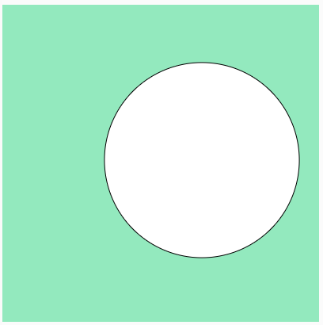
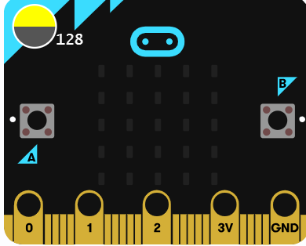
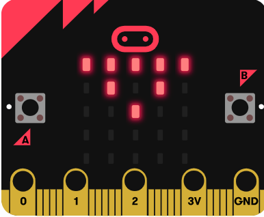

Meus projetos

Projeto JavaScript
É um projeto feito no site p5js

Meu projeto Make Code

Meu projeto: MakeCode
Esse projeto foi inspirado nos slides escolares CMSP que consiste no desenvolvimento de uma mensagem subliminar por trás de uma figura de led da pecinha Micro-Bit.